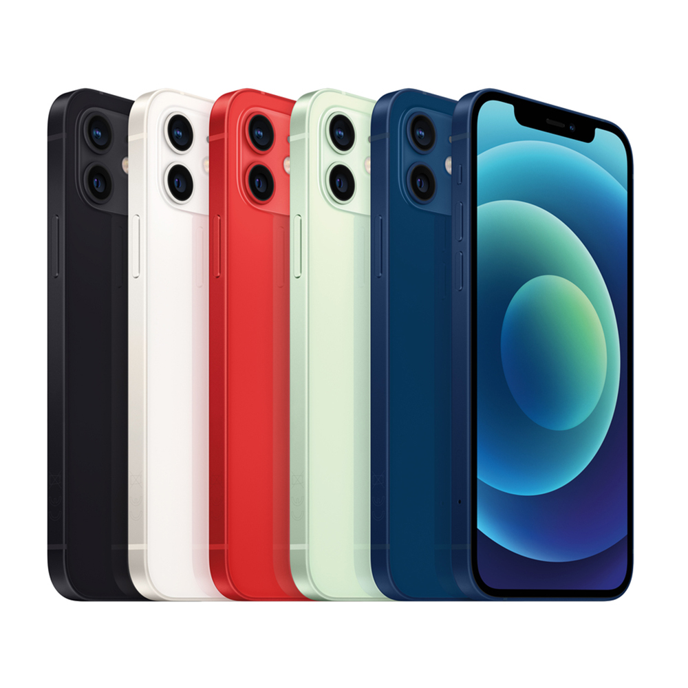

iPhone 12 mini - это компактный смартфон от Apple, представленный в 2020 году. Этот устройство предлагает множество возможностей в небольшом корпусе. Он оснащен 5,4-дюймовым Super Retina XDR-дисплеем, который обеспечивает яркие цвета и высокую четкость изображения. iPhone 12 mini снабжен процессором A14 Bionic, что гарантирует отличную производительность и поддержку последних технологий. Камера на 12 Мп с Night mode и Deep Fusion позволяет делать высококачественные снимки даже при низком освещении. Он также поддерживает 5G, обеспечивая быстрый и стабильный интернет. Дизайн iPhone 12 mini сочетает в себе стекло и алюминий, обеспечивая прочность и стиль. Устройство также поддерживает беспроводную зарядку и работает на последней версии операционной системы iOS. iPhone 12 mini идеально подходит для тех, кто предпочитает компактные гаджеты без ущерба функциональности.
Для покупки iPhone 12 Mini посетите официальный сайт Apple.
Перейти на сайт Apple